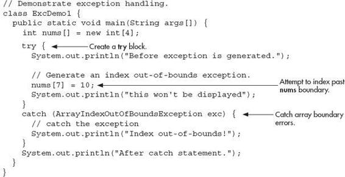
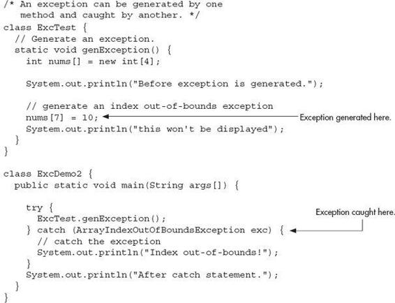
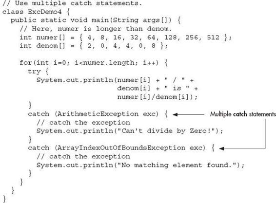
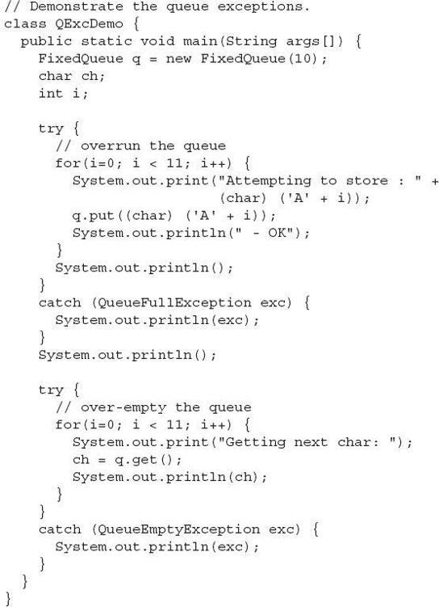
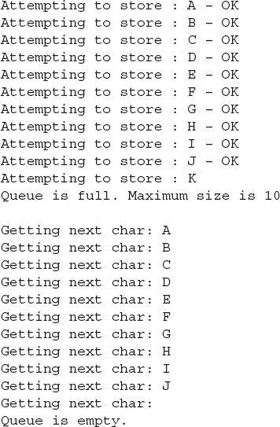

Chapter 9
Exception Handling
Key Skills & Concepts
 Know the exception hierarchy
Know the exception hierarchy Use try and catch
Understand the effects of an uncaught exception
Use multiple catch statements
Catch subclass exceptions
Nest try blocks
Throw an exception
Know the members of Throwable
Use finally
Use throws
Know Java’s built-in exceptions
Create custom exception classes
This chapter discusses exception handling. An exception is an error that occurs at run time. Using Java’s exception handling subsystem you can, in a structured and controlled manner, handle run-time errors. Although most modern programming languages offer some form of exception handling, Java’s support for it is both easy-to-use and flexible.
A principal advantage of exception handling is that it automates much of the error handling code that previously had to be entered “by hand” into any large program. For example, in some older computer languages, error codes are returned when a method fails, and these values must be checked manually, each time the method is called. This approach is both tedious and error-prone. Exception handling streamlines error handling by allowing your program to define a block of code, called an exception handler, that is executed automatically when an error occurs. It is not necessary to manually check the success or failure of each specific operation or method call. If an error occurs, it will be processed by the exception handler.
Another reason that exception handling is important is that Java defines standard exceptions for common program errors, such as divide-by-zero or file-not-found. To respond to these errors, your program must watch for and handle these exceptions. Also, Java’s API library makes extensive use of exceptions.
In the final analysis, to be a successful Java programmer means that you are fully capable of navigating Java’s exception handling subsystem.
The Exception Hierarchy
In Java, all exceptions are represented by classes. All exception classes are derived from a class called Throwable. Thus, when an exception occurs in a program, an object of some type of exception class is generated. There are two direct subclasses of Throwable: Exception and Error. Exceptions of type Error are related to errors that occur in the Java virtual machine itself, and not in your program. These types of exceptions are beyond your control, and your program will not usually deal with them. Thus, these types of exceptions are not described here.
Errors that result from program activity are represented by subclasses of Exception. For example, divide-by-zero, array boundary, and file errors fall into this category. In general, your program should handle exceptions of these types. An important subclass of Exception is RuntimeException, which is used to represent various common types of run-time errors.
Exception Handling Fundamentals
Java exception handling is managed via five keywords: try, catch, throw, throws, and finally. They form an interrelated subsystem in which the use of one implies the use of another. Throughout the course of this chapter, each keyword is examined in detail. However, it is useful at the outset to have a general understanding of the role each plays in exception handling. Briefly, here is how they work.
Program statements that you want to monitor for exceptions are contained within a try block. If an exception occurs within the try block, it is thrown. Your code can catch this exception using catch and handle it in some rational manner. System-generated exceptions are automatically thrown by the Java run-time system. To manually throw an exception, use the keyword throw. In some cases, an exception that is thrown out of a method must be specified as such by a throws clause. Any code that absolutely must be executed upon exiting from a try block is put in a finally block.
Ask the Expert
Q: Just to be sure, could you review the conditions that cause an exception to be generated?
A: Exceptions are generated in three different ways. First, the Java Virtual Machine can generate an exception in response to some internal error which is beyond your control. Normally, your program won’t handle these types of exceptions. Second, standard exceptions, such as those corresponding to divide-by-zero or array index out-of-bounds, are generated by errors in program code. You need to handle these exceptions. Third, you can manually generate an exception by using the throw statement. No matter how an exception is generated, it is handled in the same way.
Using try and catch
At the core of exception handling are try and catch. These keywords work together; you can’t have a catch without a try. Here is the general form of the try/catch exception handling blocks:
Here, ExcepType is the type of exception that has occurred. When an exception is thrown, it is caught by its corresponding catch statement, which then processes the exception. As the general form shows, there can be more than one catch statement associated with a try. The type of the exception determines which catch statement is executed. That is, if the exception type specified by a catch statement matches that of the exception, then that catch statement is executed (and all others are bypassed). When an exception is caught, exOb will receive its value.
Here is an important point: If no exception is thrown, then a try block ends normally, and all of its catch statements are bypassed. Execution resumes with the first statement following the last catch. Thus, catch statements are executed only if an exception is thrown.
NOTE
Beginning with JDK 7, there is another form of the try statement that supports automatic resource management. This form of try is called try-with-resources. It is described in Chapter 10, in the context of managing I/O streams (such as those connected to a file) because streams are some of the most commonly used resources.
A Simple Exception Example
Here is a simple example that illustrates how to watch for and catch an exception. As you know, it is an error to attempt to index an array beyond its boundaries. When this occurs, the JVM throws an ArrayIndexOutOfBoundsException. The following program purposely generates such an exception and then catches it:

This program displays the following output:
Although quite short, the preceding program illustrates several key points about exception handling. First, the code that you want to monitor for errors is contained within a try block. Second, when an exception occurs (in this case, because of the attempt to index nums beyond its bounds), the exception is thrown out of the try block and caught by the catch statement. At this point, control passes to the catch, and the try block is terminated. That is, catch is not called. Rather, program execution is transferred to it. Thus, the println( ) statement following the out-of-bounds index will never execute. After the catch statement executes, program control continues with the statements following the catch. Thus, it is the job of your exception handler to remedy the problem that caused the exception so that program execution can continue normally.
Remember, if no exception is thrown by a try block, no catch statements will be executed and program control resumes after the catch statement. To confirm this, in the preceding program, change the line
Now, no exception is generated, and the catch block is not executed.
It is important to understand that all code within a try block is monitored for exceptions. This includes exceptions that might be generated by a method called from within the try block. An exception thrown by a method called from within a try block can be caught by the catch statements associated with that try block—assuming, of course, that the method did not catch the exception itself. For example, this is a valid program:

This program produces the following output, which is the same as that produced by the first version of the program shown earlier:
Since genException( ) is called from within a try block, the exception that it generates (and does not catch) is caught by the catch in main( ). Understand, however, that if genException( ) had caught the exception itself, it never would have been passed back to main( ).
The Consequences of an Uncaught Exception
Catching one of Java’s standard exceptions, as the preceding program does, has a side benefit: It prevents abnormal program termination. When an exception is thrown, it must be caught by some piece of code, somewhere. In general, if your program does not catch an exception, then it will be caught by the JVM. The trouble is that the JVM’s default exception handler terminates execution and displays a stack trace and error message. For example, in this version of the preceding example, the index out-of-bounds exception is not caught by the program.
When the array index error occurs, execution is halted, and the following error message is displayed.
While such a message is useful for you while debugging, it would not be something that you would want others to see, to say the least! This is why it is important for your program to handle exceptions itself, rather than rely upon the JVM.
As mentioned earlier, the type of the exception must match the type specified in a catch statement. If it doesn’t, the exception won’t be caught. For example, the following program tries to catch an array boundary error with a catch statement for an ArithmeticException (another of Java’s built-in exceptions). When the array boundary is overrun, an ArrayIndexOutOfBoundsException is generated, but it won’t be caught by the catch statement. This results in abnormal program termination.
The output is shown here.
As the output demonstrates, a catch for ArithmeticException won’t catch an ArrayIndexOutOfBoundsException.
Exceptions Enable You to Handle Errors Gracefully
One of the key benefits of exception handling is that it enables your program to respond to an error and then continue running. For example, consider the following example that divides the elements of one array by the elements of another. If a division by zero occurs, an ArithmeticException is generated. In the program, this exception is handled by reporting the error and then continuing with execution. Thus, attempting to divide by zero does not cause an abrupt run-time error resulting in the termination of the program. Instead, it is handled gracefully, allowing program execution to continue.
The output from the program is shown here:
This example makes another important point: Once an exception has been handled, it is removed from the system. Therefore, in the program, each pass through the loop enters the try block anew; any prior exceptions have been handled. This enables your program to handle repeated errors.
Using Multiple catch Statements
As stated earlier, you can associate more than one catch statement with a try. In fact, it is common to do so. However, each catch must catch a different type of exception. For example, the program shown here catches both array boundary and divide-by-zero errors:

This program produces the following output:
As the output confirms, each catch statement responds only to its own type of exception.
In general, catch expressions are checked in the order in which they occur in a program. Only a matching statement is executed. All other catch blocks are ignored.
Catching Subclass Exceptions
There is one important point about multiple catch statements that relates to subclasses. A catch clause for a superclass will also match any of its subclasses. For example, since the superclass of all exceptions is Throwable, to catch all possible exceptions, catch Throwable. If you want to catch exceptions of both a superclass type and a subclass type, put the subclass first in the catch sequence. If you don’t, then the superclass catch will also catch all derived classes. This rule is self-enforcing because putting the superclass first causes unreachable code to be created, since the subclass catch clause can never execute. In Java, unreachable code is an error.
For example, consider the following program:
The output from the program is shown here:
Ask the Expert
Q: Why would I want to catch superclass exceptions?
A: There are, of course, a variety of reasons. Here are a couple. First, if you add a catch clause that catches exceptions of type Exception, then you have effectively added a “catch all” clause to your exception handler that deals with all program-related exceptions. Such a “catch all” clause might be useful in a situation in which abnormal program termination must be avoided no matter what occurs. Second, in some situations, an entire category of exceptions can be handled by the same clause. Catching the superclass of these exceptions allows you to handle all without duplicated code.
In this case, catch(Throwable) catches all exceptions except for ArrayIndexOutOfBounds-Exception. The issue of catching subclass exceptions becomes more important when you create exceptions of your own.
Try Blocks Can Be Nested
One try block can be nested within another. An exception generated within the inner try block that is not caught by a catch associated with that try is propagated to the outer try block. For example, here the ArrayIndexOutOfBoundsException is not caught by the inner catch, but by the outer catch:
The output from the program is shown here:
In this example, an exception that can be handled by the inner try—in this case, a divide-by-zero error—allows the program to continue. However, an array boundary error is caught by the outer try, which causes the program to terminate.
Although certainly not the only reason for nested try statements, the preceding program makes an important point that can be generalized. Often nested try blocks are used to allow different categories of errors to be handled in different ways. Some types of errors are catastrophic and cannot be fixed. Some are minor and can be handled immediately. You might use an outer try block to catch the most severe errors, allowing inner try blocks to handle less serious ones.
Throwing an Exception
The preceding examples have been catching exceptions generated automatically by the JVM. However, it is possible to manually throw an exception by using the throw statement. Its general form is shown here:
throw exceptOb;
Here, exceptOb must be an object of an exception class derived from Throwable.
Here is an example that illustrates the throw statement by manually throwing an ArithmeticException:
The output from the program is shown here:
Notice how the ArithmeticException was created using new in the throw statement. Remember, throw throws an object. Thus, you must create an object for it to throw. That is, you can’t just throw a type.
Rethrowing an Exception
An exception caught by one catch statement can be rethrown so that it can be caught by an outer catch. The most likely reason for rethrowing this way is to allow multiple handlers access to the exception. For example, perhaps one exception handler manages one aspect of an exception, and a second handler copes with another aspect. Remember, when you rethrow an exception, it will not be recaught by the same catch statement. It will propagate to the next catch statement. The following program illustrates rethrowing an exception:
Ask the Expert
Q: Why would I want to manually throw an exception?
A: Most often, the exceptions that you will throw will be instances of exception classes that you created. As you will see later in this chapter, creating your own exception classes allows you to handle errors in your code as part of your program’s overall exception handling strategy.
In this program, divide-by-zero errors are handled locally, by genException( ), but an array boundary error is rethrown. In this case, it is caught by main( ).
A Closer Look at Throwable
Up to this point, we have been catching exceptions, but we haven’t been doing anything with the exception object itself. As the preceding examples all show, a catch clause specifies an exception type and a parameter. The parameter receives the exception object. Since all exceptions are subclasses of Throwable, all exceptions support the methods defined by Throwable. Several commonly used ones are shown in Table 9-1.
Table 9-1 Commonly Used Methods Defined by Throwable
Of the methods defined by Throwable, two of the most interesting are printStackTrace( ) and toString( ). You can display the standard error message plus a record of the method calls that lead up to the exception by calling printStackTrace( ). You can use toString( ) to retrieve the standard error message. The toString( ) method is also called when an exception is used as an argument to println( ). The following program demonstrates these methods:
The output from this program is shown here:
Using finally
Sometimes you will want to define a block of code that will execute when a try/catch block is left. For example, an exception might cause an error that terminates the current method, causing its premature return. However, that method may have opened a file or a network connection that needs to be closed. Such types of circumstances are common in programming, and Java provides a convenient way to handle them: finally.
To specify a block of code to execute when a try/catch block is exited, include a finally block at the end of a try/catch sequence. The general form of a try/catch that includes finally is shown here.
The finally block will be executed whenever execution leaves a try/catch block, no matter what conditions cause it. That is, whether the try block ends normally, or because of an exception, the last code executed is that defined by finally. The finally block is also executed if any code within the try block or any of its catch statements return from the method.
Here is an example of finally:
Here is the output produced by the program:
As the output shows, no matter how the try block is exited, the finally block is executed.
Using throws
In some cases, if a method generates an exception that it does not handle, it must declare that exception in a throws clause. Here is the general form of a method that includes a throws clause:
Here, except-list is a comma-separated list of exceptions that the method might throw outside of itself.
You might be wondering why you did not need to specify a throws clause for some of the preceding examples, which threw exceptions outside of methods. The answer is that exceptions that are subclasses of Error or RuntimeException don’t need to be specified in a throws list. Java simply assumes that a method may throw one. All other types of exceptions do need to be declared. Failure to do so causes a compile-time error.
Actually, you saw an example of a throws clause earlier in this book. As you will recall, when performing keyboard input, you needed to add the clause
to main( ). Now you can understand why. An input statement might generate an IOException, and at that time, we weren’t able to handle that exception. Thus, such an exception would be thrown out of main( ) and needed to be specified as such. Now that you know about exceptions, you can easily handle IOException.
Let’s look at an example that handles IOException. It creates a method called prompt( ), which displays a prompting message and then reads a character from the keyboard. Since input is being performed, an IOException might occur. However, the prompt( ) method does not handle IOException itself. Instead, it uses a throws clause, which means that the calling method must handle it. In this example, the calling method is main( ), and it deals with the error.
On a related point, notice that IOException is fully qualified by its package name java.io. As you will learn in Chapter 10, Java’s I/O system is contained in the java.io package. Thus, the IOException is also contained there. It would also have been possible to import java.io and then refer to IOException directly.
Three Recently Added Exception Features
Beginning with JDK 7, Java's exception handling mechanism has been expanded with the addition of three features. The first supports automatic resource management, which automates the process of releasing a resource, such as a file, when it is no longer needed. It is based on an expanded form of try, called the try-with-resources statement, and it is described in Chapter 10, when files are discussed. The second new feature is called multi-catch, and the third is sometimes called final rethrow or more precise rethrow. These two features are described here.
Multi-catch allows two or more exceptions to be caught by the same catch clause. As you learned earlier, it is possible (indeed, common) for a try to be followed by two or more catch clauses. Although each catch clause often supplies its own unique code sequence, it is not uncommon to have situations in which two or more catch clauses execute the same code sequence even though they catch different exceptions. Instead of having to catch each exception type individually, you can now use a single catch clause to handle the exceptions without code duplication.
To create a multi-catch, specify a list of exceptions within a single catch clause. You do this by separating each exception type in the list with the OR operator. Each multi-catch parameter is implicitly final. (You can explicitly specify final, if desired, but it is not necessary.) Because each multi-catch parameter is implicitly final, it can't be assigned a new value.
Here is how you can use the multi-catch feature to catch both ArithmeticException and ArrayIndexOutOfBoundsException with a single catch clause:
Here is a simple program that demonstrates the use of this multi-catch:
The program will generate an ArithmeticException when the division by zero is attempted. It will generate an ArrayIndexOutOfBoundsException when the attempt is made to access outside the bounds of chrs. Both exceptions are caught by the single catch statement.
The more precise rethrow feature restricts the type of exceptions that can be rethrown to only those checked exceptions that the associated try block throws, that are not handled by a preceding catch clause, and that are a subtype or supertype of the parameter. While this capability might not be needed often, it is now available for use. For the final rethrow feature to be in force, the catch parameter must be effectively final. This means that it must not be assigned a new value inside the catch block. It can also be explicitly specified as final, but this is not necessary.
Java’s Built-in Exceptions
Inside the standard package java.lang, Java defines several exception classes. A few have been used by the preceding examples. The most general of these exceptions are subclasses of the standard type RuntimeException. Since java.lang is implicitly imported into all Java programs, most exceptions derived from RuntimeException are automatically available. Furthermore, they need not be included in any method’s throws list. In the language of Java, these are called unchecked exceptions because the compiler does not check to see if a method handles or throws these exceptions. The unchecked exceptions defined in java.lang are listed in Table 9-2. Table 9-3 lists those exceptions defined by java.lang that must be included in a method’s throws list if that method can generate one of these exceptions and does not handle it itself. These are called checked exceptions. In addition to the exceptions in java.lang, Java defines several other types of exceptions that relate to other packages, such as IOException mentioned earlier.
Table 9-2 The Unchecked Exceptions Defined in java.lang
Table 9-3 The Checked Exceptions Defined in java.lang
Ask the Expert
Q: I have heard that Java supports something called chained exceptions. What are they?
A: Chained exceptions were added to Java by JDK 1.4. The chained exception feature allows you to specify one exception as the underlying cause of another. For example, imagine a situation in which a method throws an ArithmeticException because of an attempt to divide by zero. However, the actual cause of the problem was that an I/O error occurred, which caused the divisor to be set improperly. Although the method must certainly throw an ArithmeticException, since that is the error that occurred, you might also want to let the calling code know that the underlying cause was an I/O error. Chained exceptions let you handle this, and any other situation, in which layers of exceptions exist.
To allow chained exceptions, two constructors and two methods were added to Throwable. The constructors are shown here:
Throwable(Throwable causeExc)
Throwable(String msg, Throwable causeExc)
In the first form, causeExc is the exception that causes the current exception. That is, causeExc is the underlying reason that an exception occurred. The second form allows you to specify a description at the same time that you specify a cause exception. These two constructors have also been added to the Error, Exception, and RuntimeException classes.
The chained exception methods added to Throwable are getCause( ) and initCause( ). These methods are shown here:
Throwable getCause( )
Throwable initCause(Throwable causeExc)
The getCause( ) method returns the exception that underlies the current exception. If there is no underlying exception, null is returned. The initCause( ) method associates causeExc with the invoking exception and returns a reference to the exception. Thus, you can associate a cause with an exception after the exception has been created. In general, initCause( ) is used to set a cause for legacy exception classes that don’t support the two additional constructors described earlier.
Chained exceptions are not something that every program will need. However, in cases in which knowledge of an underlying cause is useful, they offer an elegant solution.
Creating Exception Subclasses
Although Java’s built-in exceptions handle most common errors, Java’s exception handling mechanism is not limited to these errors. In fact, part of the power of Java’s approach to exceptions is its ability to handle exception types that you create. Through the use of custom exceptions, you can manage errors that relate specifically to your application. Creating an exception class is easy. Just define a subclass of Exception (which is, of course, a subclass of Throwable). Your subclasses don’t need to actually implement anything—it is their existence in the type system that allows you to use them as exceptions.
The Exception class does not define any methods of its own. It does, of course, inherit those methods provided by Throwable. Thus, all exceptions, including those that you create, have the methods defined by Throwable available to them. Of course, you can override one or more of these methods in exception subclasses that you create.
Here is an example that creates an exception called NonIntResultException, which is generated when the result of dividing two integer values produces a result with a fractional component. NonIntResultException has two fields which hold the integer values; a constructor; and an override of the toString( ) method, allowing the description of the exception to be displayed using println( ).
The output from the program is shown here:
Ask the Expert
Q: When should I use exception handling in a program? When should I create my own custom exception classes?
A: Since the Java API makes extensive use of exceptions to report errors, nearly all real-world programs will make use of exception handling. This is the part of exception handling that most new Java programmers find easy. It is harder to decide when and how to use your own custom-made exceptions. In general, errors can be reported in two ways: return values and exceptions. When is one approach better than the other? Simply put, in Java, exception handling should be the norm. Certainly, returning an error code is a valid alternative in some cases, but exceptions provide a more powerful, structured way to handle errors. They are the way professional Java programmers handle errors in their code.
| Try This 9-1 |
Adding Exceptions to the Queue Class |
In this project, you will create two exception classes that can be used by the queue classes developed by Project 8-1. They will indicate the queue-full and queue-empty error conditions. These exceptions can be thrown by the put( ) and get( ) methods, respectively. For the sake of simplicity, this project will add these exceptions to the FixedQueue class, but you can easily incorporate them into the other queue classes from Project 8-1.
1. You will create two files that will hold the queue exception classes. Call the first file QueueFullException.java and enter into it the following:
A QueueFullException will be generated when an attempt is made to store an item in an already full queue.
2. Create the second file QueueEmptyException.java and enter into it the following:
A QueueEmptyException will be generated when an attempt is made to remove an element from an empty queue.
3. Modify the FixedQueue class so that it throws exceptions when an error occurs, as shown here. Put it in a file called FixedQueue.java.
Notice that two steps are required to add exceptions to FixedQueue. First, get( ) and put( ) must have a throws clause added to their declarations. Second, when an error occurs, these methods throw an exception. Using exceptions allows the calling code to handle the error in a rational fashion. You might recall that the previous versions simply reported the error. Throwing an exception is a much better approach.
4. To try the updated FixedQueue class, use the QExcDemo class shown here. Put it into a file called QExcDemo.java:

5. Since FixedQueue implements the ICharQ interface, which defines the two queue methods get( ) and put( ), ICharQ will need to be changed to reflect the throws clause. Here is the updated ICharQ interface. Remember, this must be in a file by itself called ICharQ.java.
6. Now, compile the updated ICharQ.java file. Then, compile FixedQueue.java, QueueFullException.java, QueueEmptyException.java, and QExcDemo.java. Finally, run QExcDemo. You will see the following output:

Chapter 9 Self Test
1. What class is at the top of the exception hierarchy?
2. Briefly explain how to use try and catch.
3. What is wrong with this fragment?
4. What happens if an exception is not caught?
5. What is wrong with this fragment?
6. Can an inner catch rethrow an exception to an outer catch?
7. The finally block is the last bit of code executed before your program ends. True or False? Explain your answer.
8. What type of exceptions must be explicitly declared in a throws clause of a method?
9. What is wrong with this fragment?
10. In question 3 of the Chapter 6 Self Test, you created a Stack class. Add custom exceptions to your class that report stack full and stack empty conditions.
11. What are the three ways that an exception can be generated?
12. What are the two direct subclasses of Throwable?
13. What is the multi-catch feature?
14. Should your code typically catch exceptions of type Error?